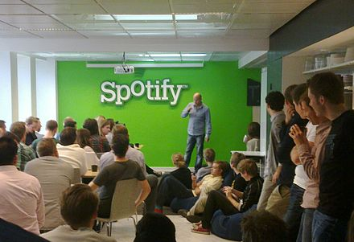
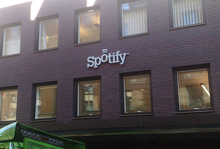

Spotify (/ˈspɒtɪfaɪ/; Swedish: [ˈspɔ̂tːɪfaj]) is a Swedish audio streaming and media services provider founded on 23 April 2006 by Daniel Ek and Martin Lorentzon.[5] It is the world's largest music streaming service provider, with over 365 million monthly active users, including 165 million paying subscribers, as of June 2021.[6] Spotify is listed (through a Luxembourg City-domiciled holding company, Spotify Technology S.A.[1]) on the New York Stock Exchange in the form of American depositary receipts. Spotify offers digital copyright restricted recorded music and podcasts, including more than 70 million songs, from record labels and media companies.[6] As a freemium service, basic features are free with advertisements and limited control, while additional features, such as offline listening and commercial-free listening, are offered via paid subscriptions. Users can search for music based on artist, album, or genre, and can create, edit, and share playlists. Spotify is available in most of Europe and the Americas, Oceania and more than 40 countries in Africa as of July 2021[7] (including South Africa and Mauritius) and Asia. By the end of 2021,[8] Spotify is expected to operate in a total of 178 countries.[9][10] The service is available on most modern devices including Windows, macOS, and Linux computers, iOS and Android smartphones and tablets and AI enabled smart speakers such as Amazon Echo and Google Home.[11] Unlike physical or download sales, which pay artists a fixed price per song or album sold, Spotify pays royalties based on the number of artist streams as a proportion of total songs streamed. It distributes approximately 70% of its total revenue to rights holders (often record labels), who then pay artists based on individual agreements.[12] According to Ben Sisario of The New York Times, approximately 13,000 of seven million artists on Spotify generated $50,000 or more in payments in 2020.[13]
Spotify was founded in 2006 in Stockholm, Sweden,[14] by Daniel Ek, former CTO of Stardoll, and Martin Lorentzon, co-founder of Tradedoubler.[15][16] According to Ek, the company's title was initially misheard from a name shouted by Lorentzon. Later they thought out an etymology of a combination of "spot" and "identify."[17]
In February 2009, Spotify opened public registration for the free service tier in the United Kingdom.[15] Registrations surged following the release of the mobile service, leading Spotify to halt registration for the free service in September, returning the UK to an invitation-only policy.[18] Spotify launched in the United States in July 2011 and offered a six-month ad-supported trial period, where new users could listen to an unlimited amount of music for free. In January 2012, the free trial periods began to expire, and limited users to ten hours of streaming each month and five plays per song.[19] In March, Spotify removed all limits on the free service tier indefinitely.[20] In April 2016, Ek and Lorentzon wrote an open letter to Swedish politicians demanding action in three areas that they claimed hindered the company's ability to recruit top talent as Spotify grows, including access to flexible housing, better education in the programming and development fields, and stock options. Ek and Lorentzon wrote that to continue competing in a global economy, politicians needed to respond with new policies, or else thousands of Spotify jobs would be moved from Sweden to the United States.[21] In February 2017, Spotify announced a major expansion of its United States operations in Lower Manhattan, New York City, at 4 World Trade Center, adding approximately 1,000 new jobs and retaining 832 existing positions.[22] The company's US headquarters are located in New York City's Flatiron District.[23] On 14 November 2018, the company announced a total of 13 new markets in the MENA region, including the creation of a new Arabic hub and several playlists, while supporting right-to-left text in their apps.  
In October 2015, "Thinking Out Loud" by Ed Sheeran became the first song to pass 500 million streams.[24] A month later, Spotify announced that "Lean On" by Major Lazer and DJ Snake featuring MØ was its most-streamed song of all time with over 525 million streams worldwide.[25] In April 2016, Rihanna overtook Justin Bieber to become the biggest artist on Spotify, with 31.3 million monthly active listeners.[26] In May 2016, Rihanna was overtaken by Drake with 31.85 million total streams.[27] In December 2016, Drake's just-under 36 million monthly listeners were overtaken by the Weeknd's 36.068 million.[28] Later that month, Drake's song "One Dance" became the first song to hit one billion streams on Spotify.[29][30] Upon its release in August 2017, the single "Look What You Made Me Do" by Taylor Swift earned over eight million streams within 24 hours, breaking the record for the most single-day streams for a track.[31] On 19 June 2018, XXXTentacion's hit single "Sad!" broke Swift's single-day streaming record, amassing 10.4 million streams the day after he was fatally shot in Florida.[32]
In March 2011, Spotify announced a customer base of one million paying subscribers across Europe,[33] and by September 2011, the number of paying subscribers had doubled to two million.[34] In August 2012, Time reported 15 million active users, four million being paying Spotify subscribers.[35] User growth continued, reaching 20 million total active users, including five million paying customers globally and one million paying customers in the United States, in December 2012.[36] By March 2013, the service had 24 million active users, six million being paying subscribers,[37] which grew to 40 million users (including ten million paying) in May 2014,[38] 60 million users (including 15 million paying) in December 2014, 75 million users (20 million paying) in June 2015, 30 million paying subscribers in March 2016,[39] 40 million paying subscribers in September 2016,[40] and 100 million total users in June 2016.[41] In April 2020, Spotify reached 133 million premium users.[42] In countries affected by the COVID-19 pandemic, Spotify registered a fall in users in late February, but it has seen a recovery.[43]
The Financial Times reported in March 2017 that, as part of its efforts to renegotiate new licensing deals with music labels, Spotify and major record labels had agreed that Spotify would restrict some newly released albums to its Premium tier, with Spotify receiving a reduction in royalty fees to do so. Select albums would be available only on the Premium tier for a period of time, before general release. The deal "may be months away from being finalized, but Spotify is said to have cleared this particular clause with major record labels".[44][45][46] New reports in April confirmed that Spotify and Universal Music Group had reached an agreement to allow artists part of Universal to limit their new album releases to the Premium service tier for a maximum of two weeks. Spotify CEO Daniel Ek commented that "We know that not every album by every artist should be released the same way, and we've worked hard with UMG to develop a new, flexible release policy. Starting today, Universal artists can choose to release new albums on premium only for two weeks, offering subscribers an earlier chance to explore the complete creative work, while the singles are available across Spotify for all our listeners to enjoy".[47][48][49] It was announced later in April that this type of agreement would be extended to indie artists signed to the Merlin Network agency.[50][51]
Spotify went public on the stock market in April 2018 using a direct public offering rather than an initial public offering. This approach is not intended to raise fresh capital, but to let investors get their returns.[52][53][54] Morgan Stanley is the company's slated advisor on the matter.[54] After making its debut on the New York Stock Exchange on 3 April 2018, CNBC reported that Spotify opened at $165.90, more than 25% above its reference price of $132.[55]
On 3 July 2020, cybersecurity firm vpnMentor discovered a database containing 380 million individual records, including the logins and passwords of Spotify users.[56] The database was thought to be evidence of an impending credential stuffing cyberattack targeting Spotify[57] as it contained the credentials of up to 350,000 compromised user accounts.[58] In response to the attack, Spotify issued a rolling reset of passwords for affected accounts in November 2020.[59]
In May 2013, Spotify acquired music discovery app Tunigo.[60] In March 2014, they acquired The Echo Nest, a music intelligence company.[61][62] In June 2015, Spotify announced they had acquired Seed Scientific, a data science consulting firm and analytics company. In a comment to TechCrunch, Spotify said that Seed Scientific's team would lead an Advanced Analytics unit within the company focused on developing data services.[63][64] In January 2016, they acquired social and messaging startups Cord Project and Soundwave,[65] followed in April 2016 by CrowdAlbum, a "startup that collects photos and videos of performances shared on social networks," and would "enhance the development of products that help artists understand, activate, and monetize their audiences".[66] In November 2016, Spotify acquired Preact, a "cloud-based platform and service developed for companies that operate on subscription models which helps reduce churn and build up their subscriber numbers".[67] In March 2017, Spotify acquired Sonalytic, an audio detection startup, for an undisclosed amount of money. Spotify stated that Sonalytic would be used to improve the company's personalised playlists, better match songs with compositions, and improve the company's publishing data system.[68] Spotify also acquired MightyTV later in March, an app connected to television streaming services, including Netflix and HBO Go, that recommends content to users. Spotify mainly uses MightyTV to improve its advertising efforts on the free tier of service.[69] In April, they acquired Mediachain, a blockchain startup that had been developing a decentralized database system for managing attribution and other metadata for media.[70][71] This was followed May with the acquisition of artificial intelligence startup Niland, which uses technology to improve personalisation and recommendation features for users.[72][73] In November, Spotify acquired Soundtrap, an online music studio startup.[74][75] On 12 April 2018, Spotify acquired the music licensing platform Loudr.[76] On 6 February 2019, Spotify acquired the podcast networks Gimlet Media and Anchor FM Inc., with the goal of establishing themselves as a leading figure in podcasting.[77][78][79] On 26 March, Spotify announced they would acquire another podcast network, Parcast.[80][81] On 12 September, Spotify acquired SoundBetter, a music production marketplace for people in the music industry to collaborate on projects, and distribute music tracks for licensing.[82] On 5 February 2020, Spotify announced its intent to acquire Bill Simmons' sports and pop culture blog and podcast network The Ringer for an undisclosed amount.[83][84] In November 2020, Spotify announced plans to acquire Megaphone from The Slate Group for US$235 million.[85] In March 2021, Spotify acquired app developer Betty Labs and their live social audio app, Locker Room,[86] Locker Room was rebranded in June 2021 as Spotify Greenroom, and turned into a Clubhouse competitor.[87] Also in June, Spotify acquired Podz, a podcast discovery startup.[88]
In January 2015, Sony announced PlayStation Music, a new music service with Spotify as its exclusive partner. PlayStation Music incorporates the Spotify service into Sony's PlayStation 3 and PlayStation 4 gaming consoles, and Sony Xperia mobile devices. The service launched on 30 March 2015.[89] In March 2017, Spotify announced a partnership with the South by Southwest (SXSW) conference for 2017, presenting specific content in special playlists through an SXSW hub in Spotify's apps. The integration also enabled Spotify within the SXSW GO app to help users discover and explore artists performing at the conference. Two more partnerships were announced in March; one with WNYC Studios, and one with Waze. The WNYC Studios partnership brought various podcasts from WNYC to Spotify, including Note To Self, On the Media and Here's the Thing. Spotify also announced that the third season of WNYC Studios' 2 Dope Queens podcast would premiere with a two-week exclusivity period on the service on 21 March 2017.[90] The Waze partnership allows Waze app users to view directions to destinations within the Spotify app and access their Spotify playlists through the Waze app.[91] In October, Microsoft announced that it would be ending its Groove Music streaming service by December, with all music from users transferring to Spotify as part of a new partnership.[92] In December, Spotify and Tencent's music arm, Tencent Music Entertainment (TME), agreed to swap stakes and make an investment in each other's music businesses.[93][94] As a result of this transaction, Spotify gained a 9% stake in TME with TME gaining a 7.5% stake in Spotify.[95] In February 2018, Spotify integrated with the gaming-oriented voice chat service Discord on desktop clients, allowing users to display their currently-playing song as a rich presence on their profile, and invite other users with Spotify Premium to group "listening parties".[96] In April, Spotify announced a discounted entertainment bundle with video-on-demand provider Hulu, which included discounted rates for university students.[97] In May 2020, Spotify teamed up with ESPN and Netflix to curate podcasts around Netflix's Michael Jordan documentary,[98] and in September, Spotify signed a deal with Chernin Entertainment to produce movies and TV shows.[99]
In July 2015, Spotify launched an email campaign to urge its App Store subscribers to cancel their subscriptions and start new ones through its website, bypassing the 30% transaction fee for in-app purchases required for iOS applications by technology company Apple Inc.[100] A later update to the Spotify app on iOS was rejected by Apple, prompting Spotify's general counsel Horacio Gutierrez to write a letter to Apple's then-general counsel Bruce Sewell, stating: "This latest episode raises serious concerns under both U.S. and EU competition law. It continues a troubling pattern of behavior by Apple to exclude and diminish the competitiveness of Spotify on iOS and as a rival to Apple Music, particularly when seen against the backdrop of Apple's previous anticompetitive conduct aimed at Spotify … we cannot stand by as Apple uses the App Store approval process as a weapon to harm competitors."[101] Sewell responded to the letter: "We find it troubling that you are asking for exemptions to the rules we apply to all developers and are publicly resorting to rumors and half-truths about our service." He also elaborated that "Our guidelines apply equally to all app developers, whether they are game developers, e-book sellers, video-streaming services or digital music distributors; and regardless of whether or not they compete against Apple. We did not alter our behavior or our rules when we introduced our own music streaming service or when Spotify became a competitor". Furthermore, he stated that "There is nothing in Apple's conduct that 'amounts to a violation of applicable antitrust laws.' Far from it. ... I would be happy to facilitate an expeditious review and approval of your app as soon as you provide us with something that is compliant with the App Store's rules".[102][103] In the following months, Spotify joined several other companies in filing a letter with the European Union's antitrust body indirectly accusing Apple and Google of "abusing their 'privileged position' at the top of the market", by referring to "some" companies as having "transformed into 'gatekeepers' rather than 'gateways'".[104][105] The complaint led to the European Union announcing that it would prepare an initiative by the end of 2017 for a possible law addressing unfair competition practices.[106][107] Spotify released the first version of its Apple Watch app in November 2018, allowing playback control of the iPhone via the watch. Users can also choose which devices to play music on via Bluetooth.[108] In a further escalation of the dispute with Apple, on 13 March 2019, Spotify filed an antitrust complaint with the European Commission over unfair app store practices. Two days later Apple responded stating that the claim was misleading rhetoric and that Spotify wanted benefits of a free app without being a free app. Spotify responded with a statement calling Apple a monopolist and stated that they had only filed the complaint as Apple's actions hurt competition and consumers, and were in clear violation of the law. It also said that Apple believed Spotify users on the app store were Apple's customers and not Spotify's.[109] Apple responded to Spotify's claims by counter-claiming that without the Apple App Store platform, Spotify's market reach and user base would not have been possible. Additionally, Apple stated that they have attempted to work with Spotify to integrate the service better with Apple's products, such as Siri and Apple Watch.[110] In 2019, under iOS 13, it became possible to play Spotify music using Siri commands.[111] Spotify was one of the first companies to support Epic Games in their lawsuit against Apple, which was filed after Epic also tried to bypass Apple's 30% fee for microtransactions in Fortnite. In September 2020, Spotify, Epic, and other companies founded The Coalition for App Fairness, which aims for better conditions for the inclusion of apps in app stores.[112]
Spotify operates under a freemium business model (basic services are free, while additional features are offered via paid subscriptions). Spotify generates revenue by selling premium streaming subscriptions to users and advertising placements to third parties. In December 2013, the company launched a new website, "Spotify for Artists", that explained its business model and revenue data. Spotify gets its content from major record labels as well as independent artists and pays copyright holders royalties for streaming music. The company pays 70% of its total revenue to rights holders. Spotify for Artists states that the company does not have a fixed per-play rate; instead, it considers factors such as the user's home country and the individual artist's royalty rate. Rightsholders received an average per-play payout between $.000029 and $.0084.[113] Spotify offers an unlimited subscription package, close to the Open Music Model (OMM) estimated economic equilibrium for the recording industry.[citation needed] However, the incorporation of digital rights management (DRM) limitation[114] diverges from the OMM and competitors such as iTunes Store and Amazon Music that have dropped DRM.[115][116] Music Week editor Tim Ingham wrote: "Unlike buying a CD or download, streaming is not a one-off payment. Hundreds of millions of streams of tracks are happening every day, which quickly multiplies the potential revenues on offer – and is a constant long-term source of income for artists."[117]